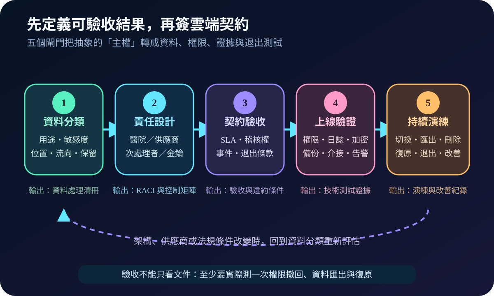
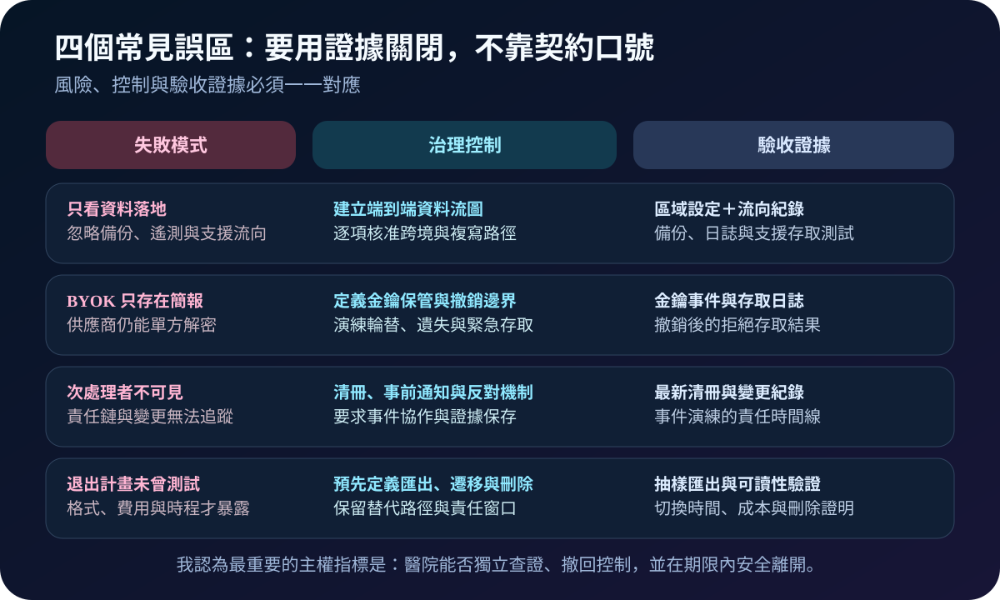

健康台灣深耕計畫-資安治理 · 2026-08-18
醫療主權雲不是資料放國內：從契約控制到可退出驗收
作者：Dr. William｜醫療資訊與資安治理實務工作者
這項能力要解決的是：醫院把資料與服務移到雲端後，仍能知道資料去哪裡、誰能操作、如何查證事件，以及供應商或策略改變時能否安全離開。我認為，資料位於特定地區只是起點；真正的主權來自可執行的控制權與可驗收的證據。
名詞解釋：資料落地不等於資料主權
資料落地描述主要儲存位置；跨境傳輸還包含備份、遙測、維運與支援存取。次處理者是供應商再委託處理資料的第三方。BYOK（Bring Your Own Key）由客戶帶入金鑰，HYOK（Hold Your Own Key）則更強調金鑰留在客戶控制邊界；兩者都不能只看名稱，必須確認供應商是否仍有其他解密路徑。稽核權讓控制可被查證，退出計畫則定義資料匯出、介接遷移、刪除與服務切換。
我的判讀：「主權雲」不是單一、通用的安全認證。醫院仍要依資料類型、適用規範與風險，逐項確認位置、管轄、控制與責任。
規劃：把需求寫成契約與驗收條件
我會先以臨床用途與敏感度分類資料，畫出正式環境、備份、日誌、支援與災難復原的流向，再建立醫院、雲端供應商及次處理者的 RACI。契約至少要釐清允許區域、跨境條件、資料用途、次處理者變更、事件協作、證據保存、稽核方式、金鑰責任、服務水準、資料可攜格式、退出時程、費用與刪除證明。驗收指標應量得到，例如高權限撤回時間、日誌可用率、抽樣匯出成功率、切換時間與改善缺失關閉率。

實作：先做小範圍證明，再擴大承載
- 盤點：建立資料處理清冊、架構圖、介接清單與責任矩陣。
- 設計：設定最小權限、管理平面隔離、金鑰輪替、日誌匯出、備份與告警路徑。
- 驗證：在授權範圍測試權限撤回、跨區設定、金鑰不可用、事件證據取得與復原。
- 上線：由資安、資料、法務採購與臨床服務負責人共同核准未解風險。
- 演練：定期抽樣匯出資料與設定，驗證替代環境可讀、介接可重建、刪除可證明。
風險：最晚才發現的問題通常最昂貴
只確認主資料庫位置，會漏掉支援與遙測流向；只買 BYOK，卻未測撤銷效果，控制權可能只是表面；次處理者不透明，會讓事件責任鏈中斷；沒有做過退出演練，格式、頻寬、費用與臨床停機限制常在解約時才出現。我的建議是把最壞情境提前變成驗收案例，而不是等供應商關係惡化後才第一次匯出。

可執行清單
- 備份、遙測、支援與災難復原資料是否都在流向圖內？
- 次處理者清冊、變更通知與反對流程是否明確？
- BYOK／HYOK 的保管、輪替、撤銷、備援與緊急存取是否測過？
- 醫院能否在事件中即時取得必要日誌與供應商協作紀錄？
- 匯出格式、介接重建、切換時程、成本與刪除證明是否實測？
- 不可消除的供應商鎖定是否有核准層級、期限與替代方案？
結語
我建議把主權雲視為持續治理能力，而不是採購標籤。當醫院能查清資料流向、撤回關鍵控制、驗證責任鏈，並在可接受時間內安全退出，主權才從口號變成可管理的臨床韌性。
參考資料
- CISA｜Cloud Security Technical Reference Architecture, Version 2（修訂：2022-06-21；查閱：2026-08-18）
- NIST SP 800-144｜Guidelines on Security and Privacy in Public Cloud Computing（發布：2011-12；查閱：2026-08-18）
內容說明
本文依健康台灣深耕計畫相關治理內容整理，並參考公開雲端安全指引加入我的控制邊界、契約問題與退出驗收框架；不取代主管機關正式公告、法律意見或個別醫院風險評估。